Deploying a registry
- 1. Prerequisites
- 2. General settings
- 3. Creating registry administrators
- 4. Mail server settings
- 5. Key data
- 6. Data for signature verification
- 7. Virtual machine parameters
- 8. Registry resources
- 9. DNS settings
- 10. Access restrictions
- 11. Localization
- 12. Officer portal
- 13. Citizen portal
- 14. Administrative portal
- 15. Geodata management subsystem
- 16. Artifacts storage
- 17. Digital documents
- 18. Backup settings
- 19. Confirmation and deployment
| 🌐 This document is available for both Global and Ukrainian regions. Use the language toggle in the top right corner to switch between languages. |
This guide explains how to configure and deploy a new registry instance on the Platform.
1. Prerequisites
Before you begin, ensure that you have successfully completed the Platform deployment in your target environment.
Once the Platform is deployed, a Platform administrator can access the Control Plane admin console —
the web interface
for managing the Platform infrastructure (cluster-mgmt component) and the individual registry components.
This document walks you through the step-by-step process of configuring and deploying a registry using the Control Plane interface.
|
You can access the Control Plane admin console in two ways:
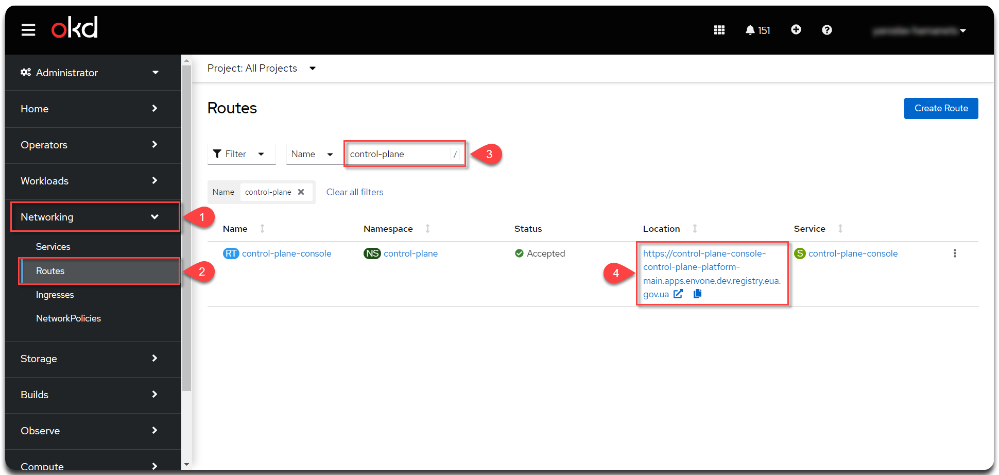
|
|
Only a Platform administrator with appropriate permissions can deploy a registry using the Control Plane console.
This action requires a For details, see Creating Platform administrators. |
To deploy a new registry, follow these steps:
-
Sign in to the Control Plane admin console.
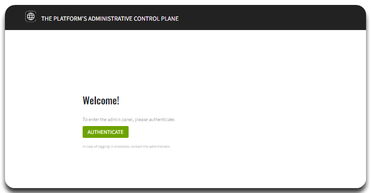 -
Open the Registries section and click the Create New button.
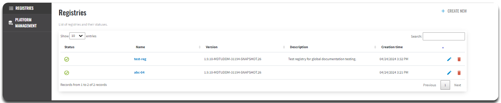 -
Configure your registry parameters.
|
Read on for details on each deployment step below. |
2. General settings
The General section comprises the primary settings for the registry to be created. Here, you can define the registry name, description, deployment mode, and a template for the registry deployment. See each option below.
Registry name and description
In this step, you can specify the registry’s system name, which is used in various data exchange operations on the Platform. The registry name cannot be changed once the registry is created.
|
You can describe the purpose of the registry or provide its official name in the Description field. This information may be helpful for business or legal reasons.
Deployment mode
In this section, you must select the deployment mode of your registry.
| The Deployment mode field is required. |
Choose one of two options:
-
development — installs the registry in the development mode.
-
production — installs the registry in the production mode.
|
Once the registry is created, you cannot change the deployment mode. |
Deployment mode indicates the environment in which the registry policy is deployed. It distinguishes between a production environment and a development environment, allowing customization of the configuration according to the needs of each. The Platform supports two modes for registry deployment: development and production.
Development mode provides deployment with settings optimized for ease of development and debugging.
Production mode provides a deployment optimized for maximum performance, stability, and security. It eliminates additional debugging tools and provides optimal configuration and settings for working in real conditions on target clusters.
|
In production mode, along with production versions of the platforms, the following are not deployed:
|
| Read more about deployment modes on the page Changing registry deployment mode. |
Template version
In this section, you can select the template version for your registry.
|
The Template version field is required. |
Template version points to a specific component branch in the Gerrit repository that contains the corresponding version of the registry template. You can choose between the latest current version or the previous stable version:
-
The latest version — contains the latest approved changes and new functionality. For example,
1.9.9.50. It is recommended to select the current version to use all current settings. -
Previous stable version — recommended to select only in case of a justified need. For example,
1.9.8.23.
|
Preparing for migration Before migrating your registry to a new version that doesn’t use multiple templates, there are some preparations you need to make. Working with the
Committing changes After making changes to Migrating registry Only after you have completed the above steps, the registry is ready to migrate to the new version. This process ensures that all your registry settings and configurations will be correctly migrated during the upgrade and that the new version will work according to your needs and requirements. |
When ready, click Next to proceed.
3. Creating registry administrators
In this step, you can assign registry administrators.
|
You can also add administrators by editing the registry soon after its deployment. For details, see Creating registry administrators. |
-
In the Administrators field, specify the administrators who will have access to the registry.
This field is required. It means at least ONE admin must be added here. 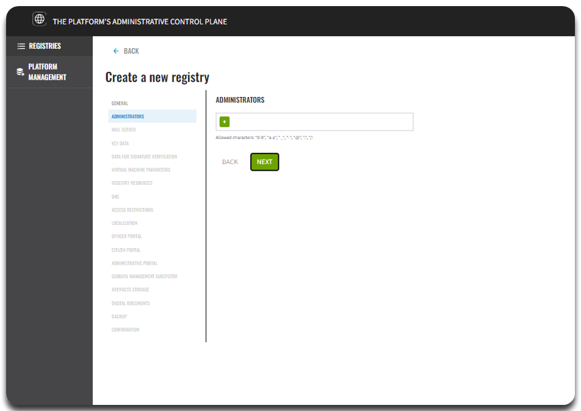
-
Click the + (Add) button and provide the following details for each registry administrator:
-
First name
-
Last name
-
Email address
-
Temporary password
-
At least 10 characters in length.
-
At least one lowercase letter.
-
At least one uppercase letter.
-
At least one digit.
-
At least one special character (@, #, $, %, ^, &, +, =).
-
Use Latin characters only.
-
No spaces.
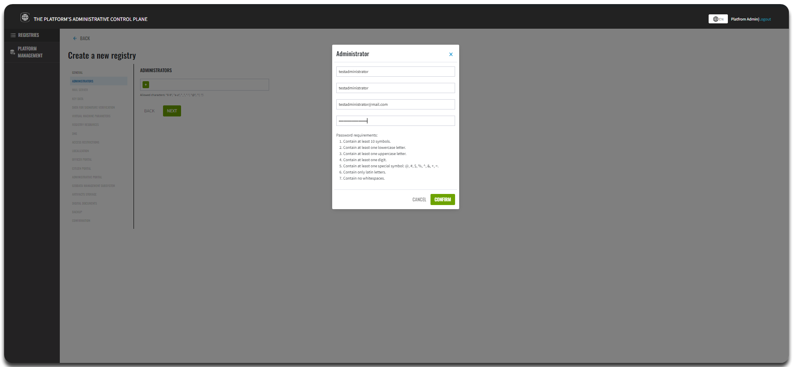
-
-
To add several administrators, repeat this step for each user separately: .
Use a lower case for email addresses.
Allowed characters are: digits (
0-9), Latin letters (a-z), underscores (_), hyphens (-), at sign (@), dots (.), and commas (,).
-
-
When ready, click Next to proceed.
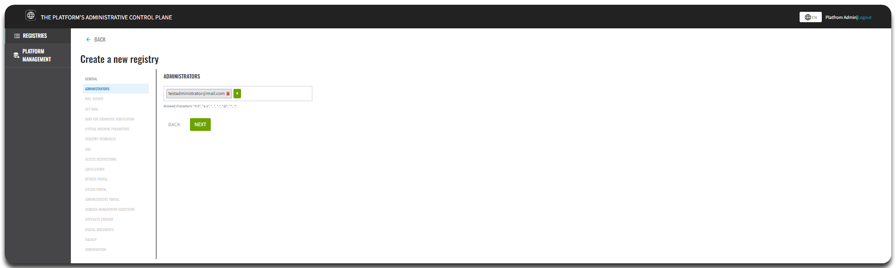
|
The system automatically creates a registry administrator account in the |
4. Mail server settings
In this step, you can configure which mail server your registry will use to send email notifications.
|
This step is optional. You can skip it during the registry creation and configure it later when editing the registry. |
The Platform offers two mail server configuration options:
-
Platform mail server (
platform-mail-server) A built-in mail server provided as part of the Platform, available to all registries within the same Platform instance. -
External mail server (
external-mail-server) An external mail provider (for example, Gmail) that you configure separately.
|
For detailed configuration instructions, see Configuring the SMTP server. |
When ready, click Next to proceed.
5. Key data
The Platform provides built-in support for applying digital signatures to registry data, ensuring the integrity of the data can be reliably verified.
Currently, this feature is implemented specifically for Ukrainian market, using libraries certified by Ukrainian data protection authorities. Extending this functionality to other regions requires additional adaptation to meet the legal requirements and standards of the target region or domain.

When ready, click Next to proceed.
6. Data for signature verification
The Platform provides built-in support for applying digital signatures to registry data, ensuring the integrity of the data can be reliably verified.
Currently, this feature is implemented specifically for Ukrainian market, using libraries certified by Ukrainian data protection authorities. Extending this functionality to other regions requires additional adaptation to meet the legal requirements and standards of the target region or domain.
When ready, click Next to proceed.
7. Virtual machine parameters
In this step, you configure the cluster infrastructure for your registry by setting specific virtual machine (VM) parameters, which come with pre-filled default values.
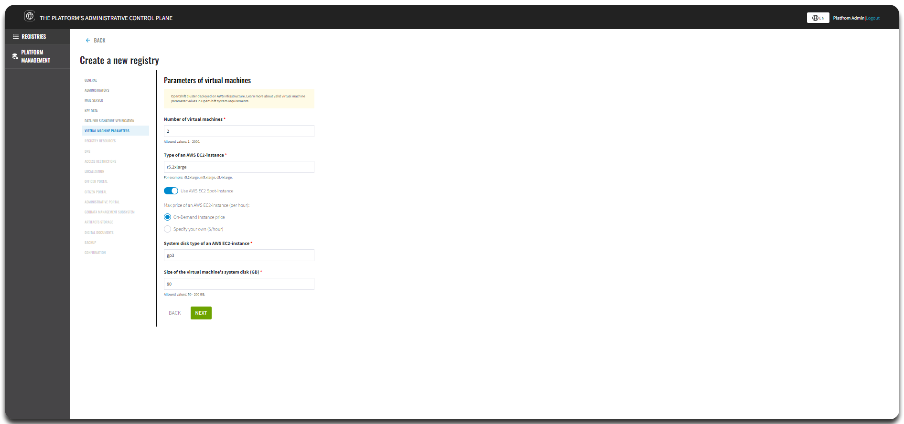
|
The OpenShift cluster runs on AWS infrastructure. For details about valid VM parameter values, refer to the OpenShift system requirements. |
7.1. Number of virtual machines
The Number of virtual machines field is required.
Choose a value between 1 and 2000 to define the scale of your cluster.
|
By default, the system provisions |
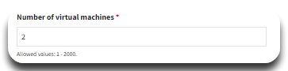
7.2. Type of AWS EC2 instance
The Type of AWS EC2 instance field is required.
You can choose one of the following:
-
r5.2xlarge: Memory-optimized, recommended for databases and caching. -
m5.xlarge: Balanced for general-purpose workloads. -
c5.4xlarge: Compute-optimized, ideal for high-compute tasks.
|
The default instance type is |
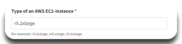
7.3. Use AWS EC2 Spot instance (optional)
The Use AWS EC2 Spot instance setting is optional and disabled by default.
If you enable it, additional settings appear:
-
Max price of an AWS EC2 instance (per hour): Define the maximum hourly price you’re willing to pay for EC2 Spot Instances.
Spot Instances offer significant cost savings compared to On-Demand Instances but come with reduced availability guarantees, as AWS can terminate them if demand increases.
You can choose:
-
On-Demand instance price (default): Pay the standard (higher) price for guaranteed availability.
-
Specify your own price ($/hour): Set a custom maximum price. If the current market price stays below your limit, the instance runs. If the price rises above it, AWS may automatically terminate the instance.
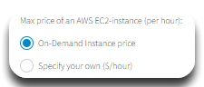
7.4. System disk type of AWS EC2 instance
The System disk type of AWS EC2 instance field is required.
Options include:
-
gp3(default): Balanced performance and price. -
io1: High-performance disks. -
st1: Optimized for large volumes of data.
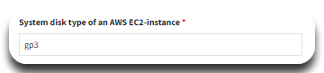
7.5. Size of the virtual machine’s system disk (GB)
The Size of the virtual machine’s system disk (GB) field is required.
Set a value between 50 and 200 GB.
|
The default disk size is |
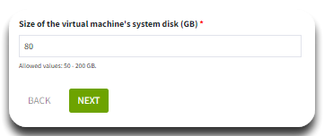
|
For more details, check these resources: |
When ready, click Next to proceed.
8. Registry resources
In this step, you can configure resource settings for individual services deployed in the registry. Managing container resources helps optimize system performance and ensure efficient use of available infrastructure.
|
This step is optional. When the registry is deployed, all services are assigned default resource values for requests, limits, and environment variables. Even if you remove services from the list, the Platform will still apply standard configurations during deployment. |
To configure registry resources:
-
Select a service from the list and click + (Add).
-
Adjust the resource parameters as needed.
-
Click Next to proceed.
|
For more details on configuring registry resources, see Managing registry resources. |
9. DNS settings
In this step,
you can configure custom DNS names and upload SSL certificates in .pem format for Keycloak and user portals.
|
This step is optional. If you skip this step, the system will use default DNS names and certificates. |
|
For detailed instructions, see Configuring custom DNS. |
When ready, click Next to proceed.
10. Access restrictions
In this step, you can configure CIDR (Classless Inter-Domain Routing) access restrictions for specific registry components, such as user portals and administrative interfaces.
|
This step is optional. However, for improved security, we recommend configuring CIDR for these components. |
|
For detailed guidance, see CIDR: Restricting access to Platform and registry components. |
When ready, click Next to proceed.
11. Localization
| This step is optional and can be configured later. |
In this step, you can add interface languages and translations, specifying the appropriate regional formats, for the following registry portals:
-
Officer portal — used by government officials and service providers to manage service delivery.
-
Citizen portal — used by citizens and service recipients to access public services.
-
Admin portal — used for registry regulations development, configuration, and administration.
-
Reports portal — the interface for creating, configuring, and viewing analytical reports and dashboards, including:
-
Redash admin instance — the web interface for report modeling and setup.
-
Redash viewer instance — the web interface for report usage and viewing.
-
12. Officer portal
In this step, you configure the Officer portal — the webinterface used by government officials and service providers to manage service delivery.
You can adjust the following options:
12.1. Deploy the Officer portal
Deploy Officer portal — toggle whether to deploy the Officer portal instance in your registry. Enable this option if you want authorized officers and service providers to access service management features.
|
The default setting is ON. |
12.2. User self-registration
Allow self-registration — toggle whether to enable user self-registration for officers. This option simplifies the registration process by letting users register themselves through a pre-modeled self-registration business process, without administrator involvement.
|
The default setting is OFF. If disabled, users who have started the self-registration process will not be able to complete their tasks if they are modeled. |
|
For more details, see Configuring self-registration for officers. |
12.3. Authentication type
Select the authentication type for Officer portal users:
-
Basic authentication (default) — users log in using a simple username and password.
-
External IDP — users authenticate through an external identity provider (IDP), supporting single sign-on (SSO) and advanced authentication mechanisms.
|
For details on user registration and authentication, see User registration. |
When ready, click Next to proceed.
13. Citizen portal
In this step, you configure the Citizen portal — the webinterface used by citizens and service recipients to access registry services.
You can adjust the following options:
13.1. Deploy the Citizen portal
Deploy Citizen portal — toggle whether to deploy the Citizen portal instance in your registry. Enable this option if you want citizens and service recipients to access public-facing services.
|
The default setting is ON. |
13.2. Authentication type
Select the authentication type for Citizen portal users:
-
Basic authentication (default) — users log in using a simple username and password.
-
External IDP — users authenticate through an external identity provider (IDP), supporting single sign-on (SSO) and advanced authentication mechanisms.
|
For details on user registration and authentication, see User registration. |
When ready, click Next to proceed.
14. Administrative portal
In this step, you can toggle whether to deploy the Administrative portal — the main web interface for modeling, configuring, and developing the registry regulations.
|
Enabled by default.
➡️ Read more about deployment modes on the page Changing registry deployment mode. |
When ready, click Next to proceed.
15. Geodata management subsystem
In this step, you can enable the Geodata management subsystem, an essential component for registries that handle spatial data. This subsystem provides tools for storing, processing, visualizing, and distributing geospatial information.
You can adjust the following option:
-
Deploy the geodata management subsystem — activate integration with geoinformation services, geospatial databases, and tools for creating and administering geodata.
|
This option is disabled by default. Once the registry is created, you cannot change this setting later. Carefully consider whether you need the Geodata management subsystem at this stage, especially if your registry relies on geospatial data for analytics, planning, or visualization. |
➡️ To learn more about geoserver capabilities, see Working with geodata in the registry.
When ready, click Next to proceed.
16. Artifacts storage
In this step, you can choose where to store the generated artifacts produced by your registry.
You can adjust the following option:
-
The Storage type parameter decides whether to store registry artifacts within the Platform’s shared storage or in a dedicated registry storage.
Options:
-
Platform (recommended) — store artifacts in the Platform’s shared storage, which helps conserve registry resources and ensures efficient performance.
-
Registry — store artifacts in separate registry-specific storage if you prefer independent management and resource separation.
|
The default is Platform. |
When ready, click Next to proceed.
17. Digital documents
In this step, you can manage the upload restrictions for digital documents handled by users and business processes. Specifically, you can configure:
-
Max file size for upload, MB — defines the File Maximum Size parameter in the File component in the UI form modeler.
-
Max total upload size for file group, MB — defines the Maximum total size parameter in the File component in the UI form modeler.
Administrative restrictions apply at the system level, but additional limits can also be set per individual file fields when modeling UI forms. |
➡️ For more details on configuring digital document upload settings, see Managing restrictions on digital document uploads.
When ready, click Next to proceed.
18. Backup settings
In this step, you can configure the backup schedule for your registry components and define how long backup copies are retained in the backup repository.
Backups are created using the Velero tool and stored securely in MinIO backup storage outside the Platform cluster. The backup schedule is defined using the unix-cron format directly in the Control Plane interface.
Additionally, the system automatically replicates data stored in OBC Ceph buckets, and you can configure a replication schedule for these as well.
|
Backup configuration is disabled by default. |
When enabled, you can:
-
Set the retention period for backup copies.
-
Define the schedule for Ceph OBC replications.
-
Specify the backup storage location for Ceph OBC replications.
-
Enter custom values for advanced control.
|
When ready, click Next to proceed.
19. Confirmation and deployment
To complete the setup process, click the Create a registry button.
You can return to any of the settings tabs to review and double-check the data you entered before finalizing.
Once initiated, the registry will appear in the Registries section of the Control Plane interface.
If the deployment is successful, a green check mark will appear next to the registry name in the Status column.
The deployment process takes some time.
The Jenkins service automatically starts the deployment by running a pipeline called
Master-Build-<registry-name>,
where <registry-name> is the name you assigned to your registry.
To monitor the deployment:
-
Go to the Registries section.
-
Open the registry you just created.
-
Scroll down to the Configuration section.
-
Click the Jenkins link icon in the CI column.
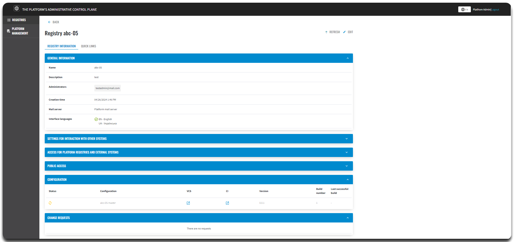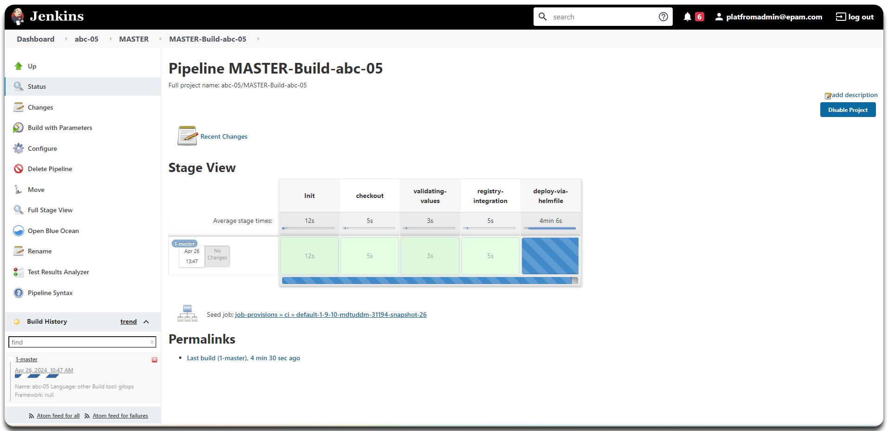
After the registry has been successfully deployed, you can view the current settings and make configuration changes as needed.
|
For more details, see the Viewing and editing registry configuration page. |